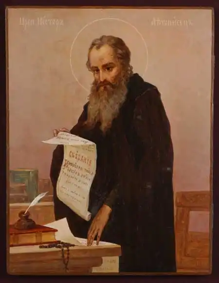

Нестор-літописець
(бл. 1056 — бл.1113)
святий; письменник, літописець Народився 1056 року в Києві. У той час, коли преподобний Антоній у безмовній тиші печери вимолював прощення для роду людського, а блаженний Феодосій розбудовував монастир, прийшов Нестор сімнадцятирічним юнаком до святої обителі. З молодих літ він явив навики в усіх чернечих чеснотах: у постійному прагненні і дотриманні чистоти тілесної й душевної, в добровільній бідності, глибокому смиренні, безвідмовній покорі, суворому пості, безперервній молитві на вічних рівноангельських подвигах, яскравим прикладом яких служили життя перших святих Печерських — Антонія і Феодосія. Свій постриг Нестор прийняв за ігумена Стефана (1074-1075) і згодом був висвячений на ієродиякона. Маючи перед собою великі праведні діла двох світил Православія, він натхненно возвеличував і прославляв Бога "в тілесі своїм і в душі своїй". З роками гамуючи тілесні пристрасті, чесноти його зростали, але ченцеві хотілося зовсім звільнитися тілесної плоті і досягти абсолютної духовності, аби стати істинним достойником Бога. Він добре пам’ятав слова, сказані самим Господом: "Дух є Бог". Головним його послушенством у монастирі стала книжна справа. "Велика буває користь від учення книжного,— говорив він, — книги наказують і вчать нас шляху до розкаяння, бо від книжних слів набираємося мудрості й стриманості... Той, хто читає книги, бесідує з Богом або святими мужами". Тернистий і багатотрудний свій шлях до істини Нестор яскраво і повно висвітлив у літописних працях. Він завжди виявляє глибоку смиренність та постійно змиряє себе, самохарактеризуючись "недостойним, грубим, ницим та переповненим численних гріхів". Історія безпомилково розставляє свої оцінки, а особливо — духовна. Преподобний Нестор належить до найосвіченіших людей Київської Русі кінця XI — початку XII століття. Окрім богословських знань, мав виняткові здібності до історії та літератури, досконало володів грецькою мовою. З його праць збереглися життєписи святих князів страстотерпців Бориса і Гліба, преподобного Феодосія, перших преподобних Печерських. Найвизначніший твір Нестора Літописця — "Повість временних літ", складений на основі раніше написаних літописів, архівних, народних переказів та оповідань, з поєднанням сучасних авторові подій. Ця виснажлива й тривала праця включала в себе й ретельну пошукову роботу. З метою глибшого й повнішого пізнання своєї історії преподобний Нестор у 1907 р. вирушає на пошуки першоджерел. Літописець відвідав Володимир-Волинський та Зимненський Святогірський монастирі. Наслідком подорожі стало включення майже в повному обсязі до "Повісті временних літ" Волинського літопису. Свою титанічну працю великий подвижник завершив близько 1113 року. Це був результат майже двадцятилітнього щоденного подвигу. Хроніку подій у ньому було зведено до 1110 року. Будь-яка подія чи явище були б назавжди втрачені для нащадків, якби вони не були зафіксовані словом. Завдяки Нестору нам відкриваються немеркнучі славні сторінки минулого, аби підтримувати й надихати наступні покоління на благородні справи, спонукати до пошуку істини. Безцінність написаного літописцем вимірюється не тільки втіленим у слові і збереженим для нас часом, але й подвижницькими діяннями, що викарбувалися у його непорочній душі нетлінним золотом чернечого досвіду. Цією працею він і самого себе включив у книги живта вічного, удостоївшись почути благословенне: "Радуйтеся, бо імена ваші написані на небесах". Упокоївся преподобний Нестор —літописець ймовiрно у 1113 роцi. "Повість временних літ"— одна з найвидатніших пам’яток світової культури. Події, описані в ній, розгорнулися на тлі вселюдських історичних подій, охоплюючи усі пласти суспільного буття — від гридниць князів до халуп трударів. Пульс тих давніх часів відбивається в дійових особах — відомих і безіменних — і передається через орачів, сіячів, рибалок, будівничих, воїнів, іконописців, тих, хто панували, і тих, що повставали проти гніту. Книга — це невичерпне джерело знань, відомостей про десятки і сотні подій, явищ, людей. У ній немає нічого другорядного. Тут усе надважливе. Вчитаймося в кожне слово, і воно наситить наш розум, душу, уяву одвічною загальнолюдською мудрістю, випробуваним часом, золотом чистої правди. ** "Повість минулих літ Нестора, чорноризця Феодосієвого мона-стиря Печерського, звідки пішла Руська земля, і хто в ній почав спершу княжити, і як Руська земля постала... Коли ж поляни жили осібно і володіли родами своїми, — бо й до сих братів існували поляни і жили кожен із родом своїм на своїх місцях, володіли кожен родом своїм, — то було [між них] три брати: одному ім’я Кий, а другому — Щек, а третьому — Хорив, і сестра їх — Либідь. І сидів Кий на горі, де нині узвіз Боричів, а Щек сидів на горі, яка нині зветься Щекавицею, а Хорив — на третій горі, од чого й прозвалася вона Хоривицею. Зробили вони городок [і] на честь брата їх найстаршого назвали його Києвом. І був довкола города ліс і бір великий, і ловили вони [тут] звірину. Були ж вони мужами мудрими й тямущими і називалися полянами. Од них оно є поляни в Києві й до сьогодні… І сів Олег, князюючи, в Києві, і мовив Олег: "Хай буде се городом руським…" І жив Олег, мир маючи з усіма землями [і] князюючи в Києві. І прийшла осінь, і спом’янув Олег коня свого, якого поставив був годувати, [зарікшись] не сідати на нього. Бо колись запитував він був волхвів і віщунів: "Од чого мені прийдеться померти?" І сказав йому один віщун: "Княже! Кінь, що його ти любиш і їздиш на нім, — од нього тобі померти". Олег же, взявши це собі на ум, сказав: "Ніколи тоді [не] сяду на коня (свого), ані гляну більше на нього". І повелів він годувати його, але не водити його до нього. І, проживши декілька літ, він не зайняв його, поки й на греків пішов. А коли повернувся він до Києва і минуло чотири роки, на п’ятий рік спом’янув він коня, що од нього, як пророчили були волхви, [прийдеться] померти Олегові. І призвав він старшого над конюхами, запитуючи: "Де є кінь мій, що його я поставив був годувати і берегти його?" А він сказав: "Умер". Олег тоді посміявся і докорив віщуна, кажучи: "Неправдиво то говорять волхви, і все те — лжа єсть: кінь умер, а я ще живий". І повелів він осідлати коня: "Дай-но погляну я на кості його". І приїхав він на місце, де ото лежали його кості голі і череп голий, і зліз він з коня, [і] посміявся, мовлячи: "Чи од цього черепа смерть мені прийняти?" І наступив він ногою на череп, і, виповзши [звідти], змія вжалила його в ногу. І з того розболівшись, він помер. І плакали за ним всі люди плачем великим, і понесли його, і погребли його на горі, що зветься Щекавицею. Єсть же могила його й до сьогодні, називається могила та Олеговою. А було всіх літ його княжіння тридцять і три…" /**(Уривок з літопису "Повість временних літ")**/ /*Азбука духовної премудрості:*/ — Подяку повинна містити в собі кожна наша молитва. — Дякувати в труднощах — заслуга більша, аніж подавати милостиню. — Дякувати Богові треба не тільки за свої успіхи у добрі, але і за успіхи інших. — Вдячність повинна бути початком і кінцем наших дій і бесід. — Бога ніщо так не гнівить, як байдужість до спасіння ближніх. — Корисне для себе ми знайдемо тоді, коли будемо шукати користі ближньому. — Господь нічого так не любить, як душу покірну, смиренну і вдячну.